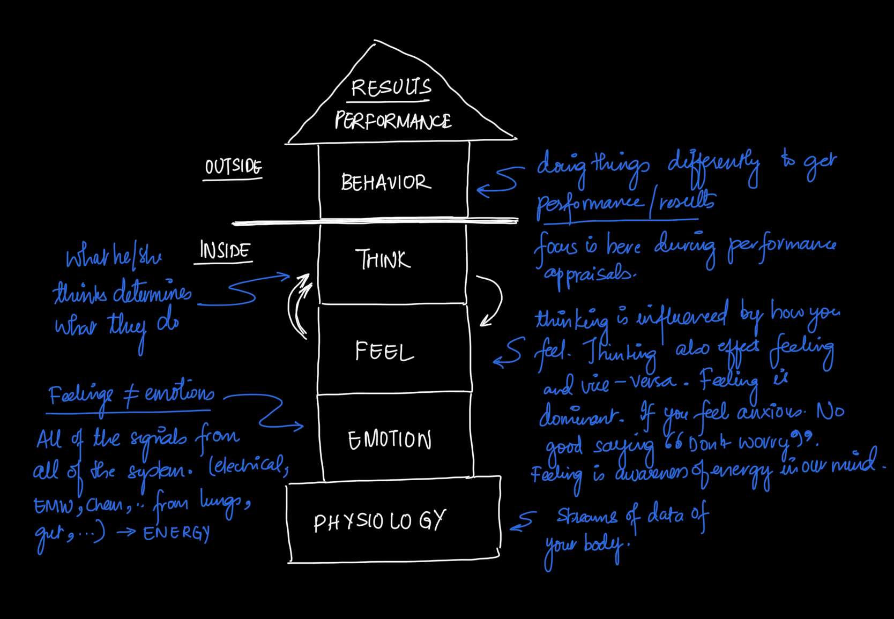
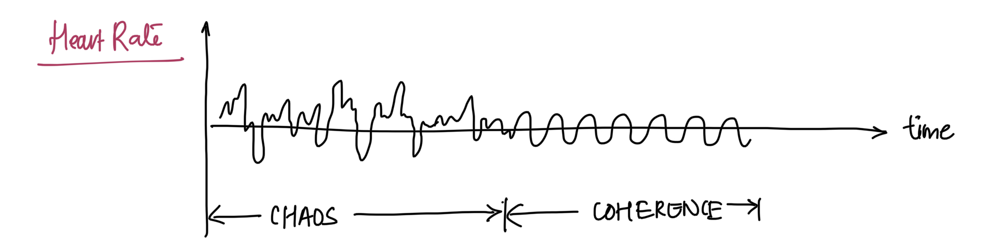
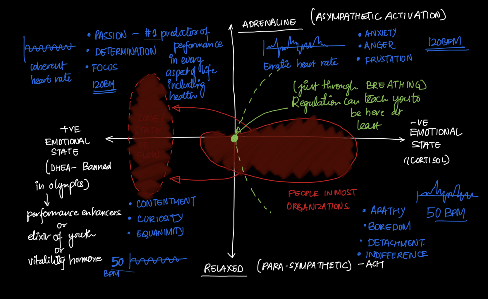

Coherence: The key to unlocking full brain potential
I recently came across this ted talk which connects breathing with Neuroscience to unlock full brain potential. More appropriately, it turned out to be an interesting lecture that sometimes you wish all other lectures were like. Two ted talks of combined 44 minutes, I recommend you watch and judge them yourself (linked below)
TL;DR version
Dr. Alan Watkins, a Neuroscientist, has studied brain function for over a decade and has identified a clear link between your physiology and brain function. By measuring Heart Rate Variance (HRV) — a measure of fluctuation of your heart beats over time — over long periods (hours, days), he can predict when you will die and how much energy your body generates throughout the day.
He alluded that we feel depleted not because we have much to do and less time but because we have limited energy. Having a coherent/stable HRV is the key to attaining the same energy levels you had ten years ago. And this key lies in the acronym (BREATHE) — Breathing Rhythmically Evenly And Through the Heart Every day. This is especially useful for senior leaders, who have to manage their energy under high-stress environments.
What does it take to be brilliant?
To maintain performance in any area, be it academics, sports or business, we must do things differently that leads to excellence.
These behaviours (what you do) are governed internally through four layers. How you behave depends on what you think and how well you think. And thinking is affected by what you are feeling. Thinking and Feeling have a reciprocal relationship, but more in the direction of feeling affecting your thinking.
And how you feel is affected by your emotional state, which is a combination of all the signals (electrical, chemical, electromagnetic, etc.) from all bodily systems. The emotional state is governed by your physical state or the physiology, streams of data from different parts of your body.
Why should I care about physiology?
So, if you can control your physiology, you can control all layers that govern behavior and will help you achieve brilliance.
The key thing that underpins brain function is the ability to generate a coherent signal. Coherence refers to the stability of Heart Rate Variance. Normally, your heart rate variance would be chaotic, but once you control your physiology, it will be stable or coherent.
Measuring heartbeats alone is not too useful, but measuring the variance in heartbeats can
- Predict when you are going to die (if measured HRV for about 24 hours)
- Measure how much energy you have got
- Alter brain function.
The organizations are interested because of reason 3. The brain is built to shut down in the simplest of tasks under pressure. This is because when we encounter any challenge, it causes our physiology to be chaotic, causing the frontal lobe (where most of the thinking takes place) to be inhibited, making it suboptimal. This also inhibits perceptual awareness — which means you are unaware that this has happened. We are designed this way for survival advantages.
And until you have got control over your physiology — anybody can make you look like an idiot — and an awful lot of times, you are going to do it yourselves. Dr. Watkins calls it DIY Lobotomy.
How to get control over physiology?
Start by getting conscious control over breathing. There are 12 different aspects of breathing which can be regulated, but only three are the most important.
Rhythm
The most important priority is rhythm — the ratio between breathing in & breathing out. This should be fixed / consistent, it doesn’t matter if it is fast or slow.
Instead of taking a few deep breaths, take a few rhythmic breaths before a big presentation. This helps you control HRV and make it coherent. You become perceptive, insightful, and a clear thinker.
Smoothness
Secondly, breathing can be fixed but in staccatos. Smoothness refers to a fixed air volume per second during both in and out breaths. Coherence requires a smooth rhythm.
Location of attention
Thirdly, while breathing, the location of attention should be through the heart area or centre of our chest. This is because
- The heart generates more power than any other organ or system
- Reduces noise in the head and moves attention away from the head to the chest while breathing through the heart area
- Puts you in a positive emotional state
The impact of Correct breathing
With a low or high heart rate, you can be in two emotional states — Positive or negative
- Negative Emotional State + High BPM — anger, frustration, anxiety — HRV is incoherent
- Negative Emotional State + Low BPM — Apathy, Boredom, Detachment, Indifference — HRV is incoherent
- Positive Emotional State + High BPM — Passion, Determination, Focus — HRV is coherent
- Positive Emotional State + Low BPM — Contentment, Curiosity, Equanimity — HRV is coherent
People in most organizations skew towards the right with negative emotional states. Through breathing, you can at least reach the mid-point
So the advice that you either have to be Psyched or relaxed before the presentation or a big event is untrue.
Moral of the story
Breathe Rhythmically Evenly And Through the Heart Everday to achieve brilliance every single day